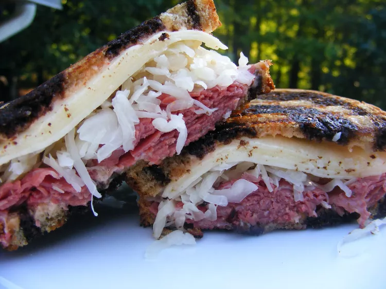

A Reuben is a grilled sandwich featuring corned beef on rye bread. The Reuben is a menu staple in Jewish-style delicatessens, but it's not technically kosher because it combines meat and cheese. A traditional reuben sandwich consists of thinly sliced corned beef, Swiss cheese, and sauerkraut on rye bread slathered with Russian or Thousand Island dressing.
Pair your Reuben with a pickle, potato chips, French fries, or one of these classic deli sides.
Preheat a large griddle or skillet over medium heat.
Spread one side of bread slices evenly with Thousand Island dressing. On four bread slices, layer one slice Swiss cheese, 2 slices corned beef, 1/4 cup sauerkraut, and a second slice of Swiss cheese. Top with remaining bread slices, dressing-side down. Butter the top of each sandwich.
Place sandwiches, butter-side down on the preheated griddle; butter the top of each sandwich with remaining butter. Grill until both sides are golden brown, about 5 minutes per side. Serve hot.
